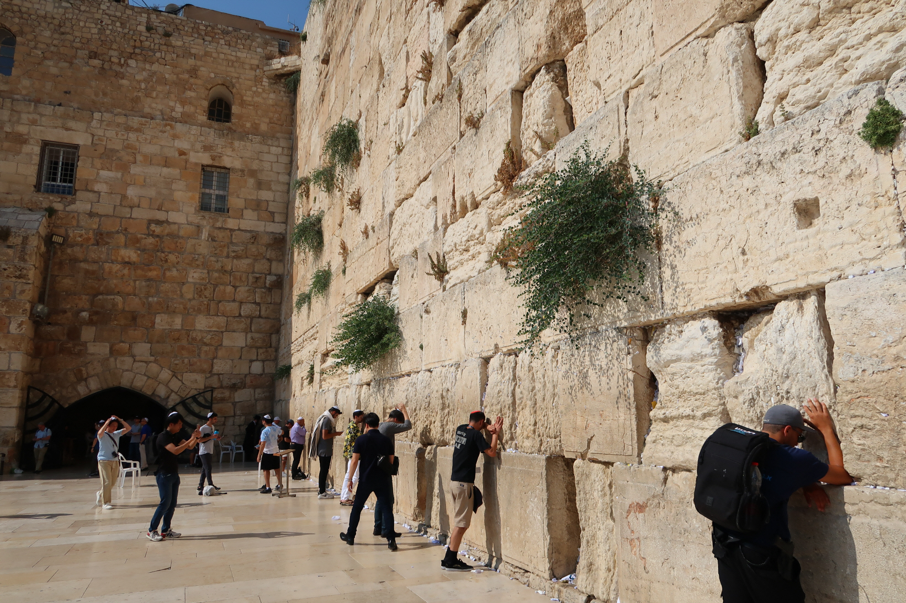
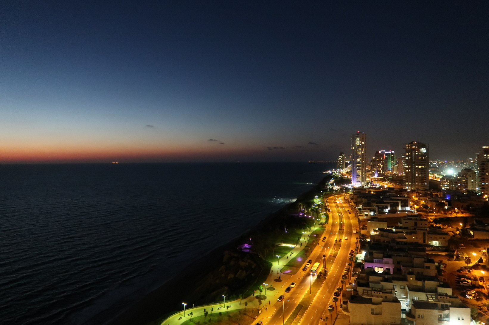
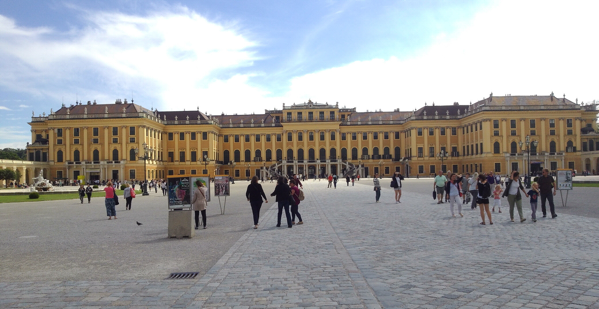

這張照片捕捉了位於耶路撒冷舊城的聖地——西牆（Western Wall，又稱哭牆）前，觸動人心的一幕。巨大的石牆由粗獷的淺色石塊砌成，縫隙中頑強地生長出綠色植物，更夾雜著無數張寫滿祈禱與心願的微小紙條，承載著千百年來的信仰厚度。 陽光斜射在平整的廣場上，幾位身著深色衣物、頭戴傳統基帕（Kippah）的小帽或包頭巾的男子，正靜靜地佇立於牆前。他們或將額頭緊貼著冰冷的石壁，或以手撫摩巨大古老的石塊，正閉眼進行深刻的祈禱與冥想。有的人低頭沉思，有的人遠觀瞻仰，整個空間瀰漫著一種神聖、肅穆且極具精神凝聚力的氛圍。這座牆不僅是一座歷史遺跡，更是無數旅人與信徒在漫漫長路中，用來對話靈魂、釘下心靈寄託的終極座標。
這張照片展現了令人屏息的海岸線夜景，完美演繹了自然與現代文明的魔幻交界。畫面左側是無垠的地中海，黑色的海浪在夜色下靜靜翻湧，遠方天際線殘留著一抹如夢似幻的暗橘色晚霞，那是白日隱去前留下的最後溫存，與上方深邃的漸層夜空形成強烈對比。 與深海的寂靜相對應的，是右側延伸至遠方的特拉維夫海岸繁華市景。一條宛如金色絲帶的濱海大道點亮了夜空，溫暖的黃色路燈照亮了車流與蜿璨的濱海步道。沿岸高聳的現代化摩天大樓鱗次櫛比，與錯落有致的白色住宅區共同編織出璀璨的燈火。這張照片不僅記錄了白天與黑夜交替的魔幻時刻，更像是一顆閃耀在歷史與未來交會處的「極境座標」，散發著無與倫比的時尚與生命力。
這張照片展現了被譽為世界上最美小鎮之一的奧地利哈修塔特（Hallstatt），宛如一幅從童話書中走出來的風景畫。畫面背景是高聳翠綠的阿爾卑斯山脈，茂密的森林順著陡峭的山坡蔓延，與左側深邃的遠山陰影共同構築了一道天然的綠色屏障。 山腳下，錯落有致的木質歐式傳統民居依山傍水而建。它們擁有深色的斜頂、白色的牆面與精緻的窗櫺，部分建築的陽台還點綴著鮮豔的花卉。小鎮的靈魂地標——擁有高聳尖塔的哥德式路德教堂（Christuskirche），優雅地佇立在湖畔最顯眼的位置。 清澈碧綠的湖水在前方靜靜流淌，將這座依山而建的絕美村落溫柔地擁入懷中。整幅畫面色彩和諧、層次分明，流露出一股遠離塵囂的寧靜與詩意，這正是「全球旅程」渴望帶您親自凝視、深深刻進生命地圖裡的夢幻極境。
這張照片捕捉了奧地利維也納最負盛名的皇家地標——熊布朗宮（Schönbrunn Palace，又稱美泉宮）的壯麗全景。整座巴洛克式宮殿建築群在晴空下舒展，標誌性的「美泉黃」外牆在陽光下泛著溫潤的歷史質感。規律對稱的拱窗、精緻的石雕頂飾與兩側延伸的翼樓，無一不彰顯著昔日哈布斯堡王朝的尊榮與大氣。 宮殿前方是極具包容力的巨大碎石廣場，中央鋪設著古樸的石磚步道。旅人們三三兩兩地在廣闊的空間中漫步、駐足或低頭交談，讓這座古老的皇家歷史遺跡多了一份當代生活的閒適。 上方湛藍的天空舒展開薄薄的羽狀白雲，與宏偉的宮殿建築群相互映襯。這幅畫面完美融合了古典主義的嚴謹與歐洲午後的優雅，正是「全球旅程」精心為您安排的人文跨界巡禮，帶領您在帝國的金色餘暉中，釘下無可取代的生命記憶座標。
© 311017 17 陳郁磬